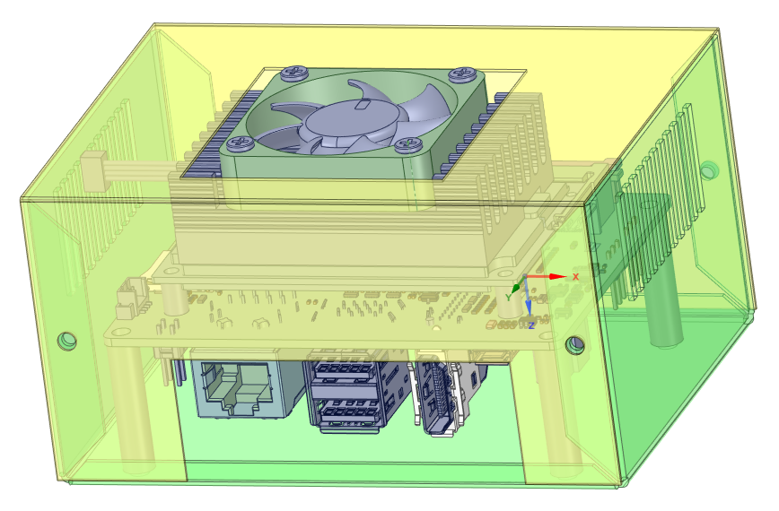

PoCで終わらせない
こんなことを言われたことありませんか？
・これはどうやって使うの？
・センサー？ 何を測るの？ 単体だとイメージわかない。
・良いと思うんだけど、使っている状況が想像できない。

自社で設計/開発した部品やモジュールをそのまま死蔵させたくない。
せっかく良いものなのに誰も使ってくれない。
そんなPoCどまりだったプロダクトを使用した最終製品を量産して商品化してみませんか？
最終製品として使用しているところを訴求できれば顧客もついてくると思います。
部品だけで無くて、最終製品として自社で売ろう。
そんな企業様や事業主様お悩みにアドバイスやコンサルティングを行います。